Activity: Constructing ordered features from sketches
This activity demonstrates how to construct ordered features using sketches.
Open a new ISO Metric Part file.
Switch to Ordered environment.
Choose the Sketch command and select the Base Reference plane Front (xz) as the sketch plane.
Sketch and add dimensions to create this basic shape. The sketch is vertically symmetric.
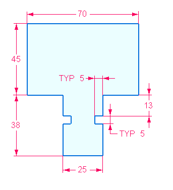
Close the sketch. On the command bar, click Finish.
Choose the Extrude command.
On the command bar, click the Select from Sketch option.
Select the sketch and right-click to accept the sketch.
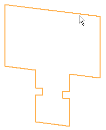
On command bar, type 65 in the distance field.
Position cursor away from sketch as shown and then click.
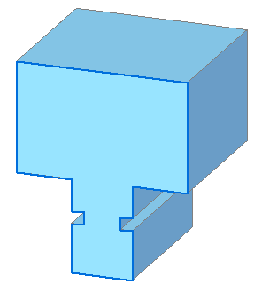
In PathFinder, turn off the display of the sketch.
Click Finish.
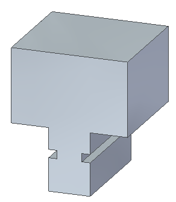
On the side face of the part, sketch two lines and add dimensions as shown.
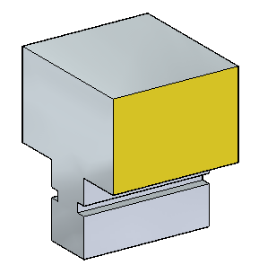
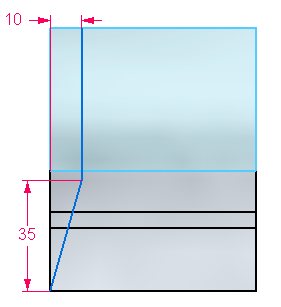
Close the sketch and click Finish.
Choose the Cut command. On the Cut command bar, click the Select from Sketch and the Chain options.
Select the two lines. On command bar, click Accept.
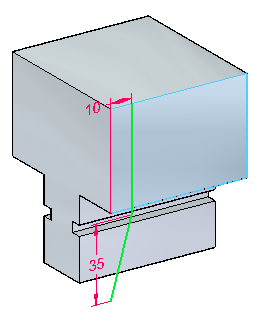
Select the side of the lines towards the front of the part.
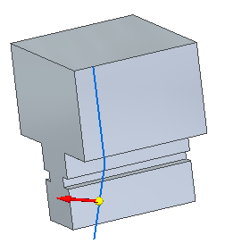
On command bar, click the Through All option .
Click when the direction arrow points to the other side of the part.
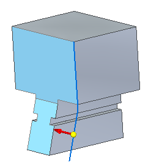
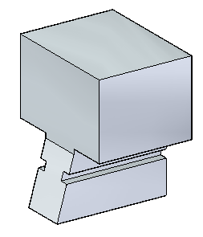
Click Finish and turn off the sketch.
On the side face, draw the following sketch.
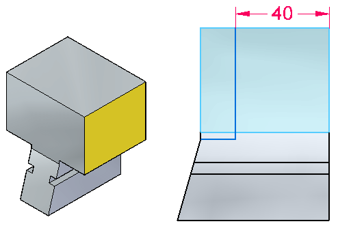
Close the sketch and click Finish.
Choose the Cut command. On the Cut command bar, click the Select option: Chain. Select the two lines and click when the direction arrow is as shown.
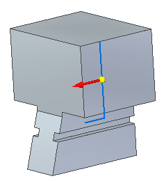
Click the Through All extent option. Click when the direction arrow is as shown.
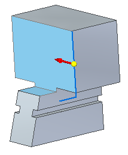
Click Finish and turn off the sketch.
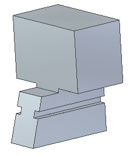
Note that you could perform the previous two material removals in one step, combining the curves into a single sketch and performing one cut. Either method works fine.
On the side face, draw and dimension an arc and two lines as shown. Convert the vertical line into a construction line.
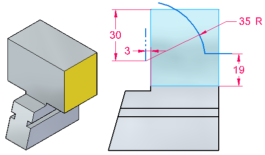
Close the sketch and click Finish.
Choose the Cut command. Select the horizontal line and arc. On command bar, click Accept. Click when the direction arrow is as shown. Material is to be removed on this side of the sketch.
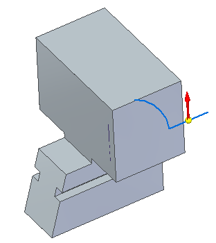
On command bar, click the Through All option.
Click when the direction arrow is as shown.
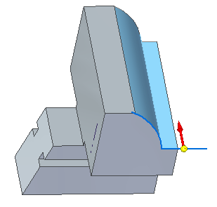
Click Finish and turn off the sketch.
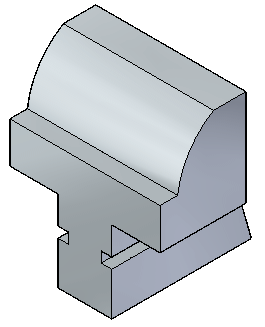
On the face shown, draw a 35 mm diameter circle centered on the midpoint of edge (2) The circle center lies on edge (1). Do not place a connect relationship for the circle center on line (1). Use a horizontal/vertical relationship with an endpoint of edge (1).
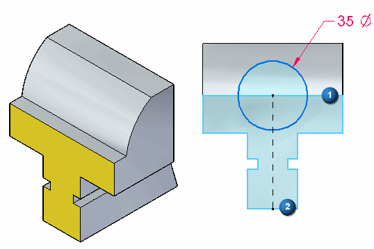
Close the sketch and click Finish.
Choose the Extrude command. Click the Select from Sketch option.
Select the sketch and right-click to accept.
On command bar, click the Through Next option. Position direction arrow as shown and click.
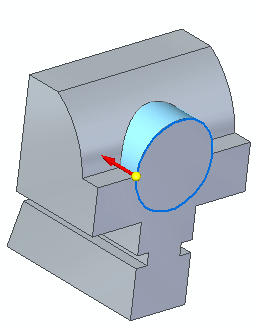
Click Finish and turn off sketch.
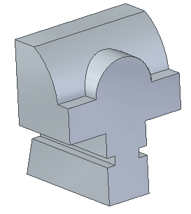
Draw a circle of diameter 19 mm concentric with the previous circular feature and create a cut at a depth of 30 mm.
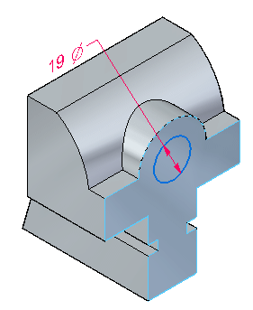
Select the region formed by the circle and remove material at a depth of 30 mm.
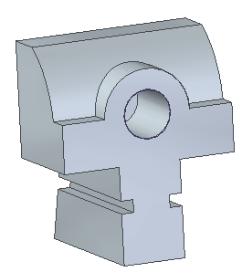
Turn off all sketches.
Save and close this file.
In this activity you created a new part by using techniques learned on adding and removing material from a base feature.
-
Click the Close button in the upper–right corner of this activity window.